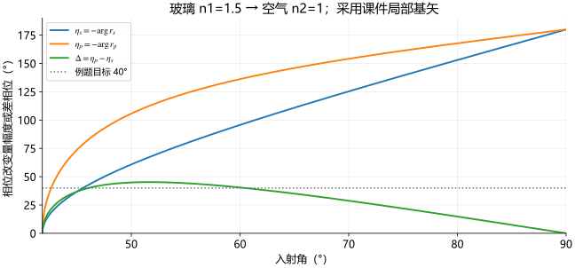

31 40°相位差为什么对应两个入射角
完整解s/p相位差例题，把复相位化为关于sin²θ的二次方程并逐个验解。
当前位置：差相位曲线 → 指定差值反求角度
第26课的差相位曲线先升后降。一条水平的40°线可能与它交两次，所以不能预设“一个目标相位只对应一个角”。本课完整处理本份课件的最后一道例题。

原课件题目
完整题干：线偏振光在玻璃—空气界面上全反射，线偏振光光矢量的振动方向与入射面成一非零或  的角度，设玻璃折射率
的角度，设玻璃折射率  ，问线偏振光以多大角度入射，才能使反射光的s波和p波的位相差等于40°？
，问线偏振光以多大角度入射，才能使反射光的s波和p波的位相差等于40°？
题干“非零或 ”的语言不够严密；结合“两个分量的相位差”的要求，应读作既不为0也不为 ，确保两者非零。本课保留原句并解释，未改动题目条件。外侧为空气，取  ；
； 从玻璃侧的界面法线量，
从玻璃侧的界面法线量， ，全反射需
，全反射需  。
。
符号约定：沿用原P9的p/s基轴及 ![\exp[i(\mathbf k\cdot\mathbf r-\omega t)]](../../assets/11-2/%E5%85%AC%E5%BC%8F-23cab45ea6ba7c6d.svg) ；反射相位辐角
；反射相位辐角  皆为负。把题中40°解释为差值的正幅度
皆为负。把题中40°解释为差值的正幅度

原页以正延迟记号写差相位；补充推导不混合负辐角与正延迟。若问有符号的  ，在本课记号下结果是
，在本课记号下结果是  ，物理轨迹相同。
，物理轨迹相同。
选择原理：两分量相位由同一个复反射系数确定
第26课已推出


输入是线偏振，所以两个实振幅的相对初相位为0或π；反射额外引入的相位差由以上两式决定。输入与入射面的具体非特殊夹角决定两个幅度比，却不改变这两种界面系数；因此本题不需要另外给该振动方位角数值。
用  合并两个反正切，得到
合并两个反正切，得到

右侧的根来自全反射；若不是全反射，不能把根号内负值当实数继续代入。
从几何角度变成二次方程
设

在  中，
中， ，根号及
，根号及  均为正。于是
均为正。于是

两边平方：

展开右边为  ，移项得
，移项得

这一步是代数展开，没有再作小角度近似。课件原解也使用该二次方程，并给末行  或
或  。
。
补充精算与双解检查
用  、
、 ：
：

物理入射角限在0–90°，取


分别约为  与
与  ，和原解按分取近似一致。不能额外把
，和原解按分取近似一致。不能额外把  当作这侧入射角，也不能只保留较小的角。
当作这侧入射角，也不能只保留较小的角。
逐个检查：
- 两个
 均大于
均大于  且小于1，满足全反射域。
且小于1，满足全反射域。 - 两角均大于41.8103°、小于90°，几何可实现。
- 代回未平方的正根式都得到
 ；平方没有留下符号不合的伪解。
；平方没有留下符号不合的伪解。 - 代回原相位式：较小角
 ；较大角
；较大角  。两个差值均为正40°。
。两个差值均为正40°。


补充解释：对  ，差相位的峰值约45.23973°。40°低于它，因此有两解；若目标超过峰值则无解，等于峰值时两解合一。判别式能给出同样的代数判断。这个峰值随折射率比改变，不是任何玻璃—空气组合都固定45.23973°。
，差相位的峰值约45.23973°。40°低于它，因此有两解；若目标超过峰值则无解，等于峰值时两解合一。判别式能给出同样的代数判断。这个峰值随折射率比改变，不是任何玻璃—空气组合都固定45.23973°。
方法与本份课件收束
识别“透明单界面全反射” → 固定基轴与相位记号 → 写差相位而非平均能量式 → 把  设为变量 → 解二次方程 → 回原正根式和全反射域验解。这样既保留两个物理解，也不把反三角函数的多值机械地全部算作入射角。
设为变量 → 解二次方程 → 回原正根式和全反射域验解。这样既保留两个物理解，也不把反三角函数的多值机械地全部算作入射角。
本份逻辑链现在闭合：边界场连续 → 频率与切向相位匹配 → 方向定律 → s/p菲涅尔系数 → 能量与偏振 → 全反射复相位及倏逝场 → 应用与原题。原页静态/备注核对与网页讲解已整理，并不代表原PPT所有点击时序已经核验，更不代表用户已阅读或掌握。